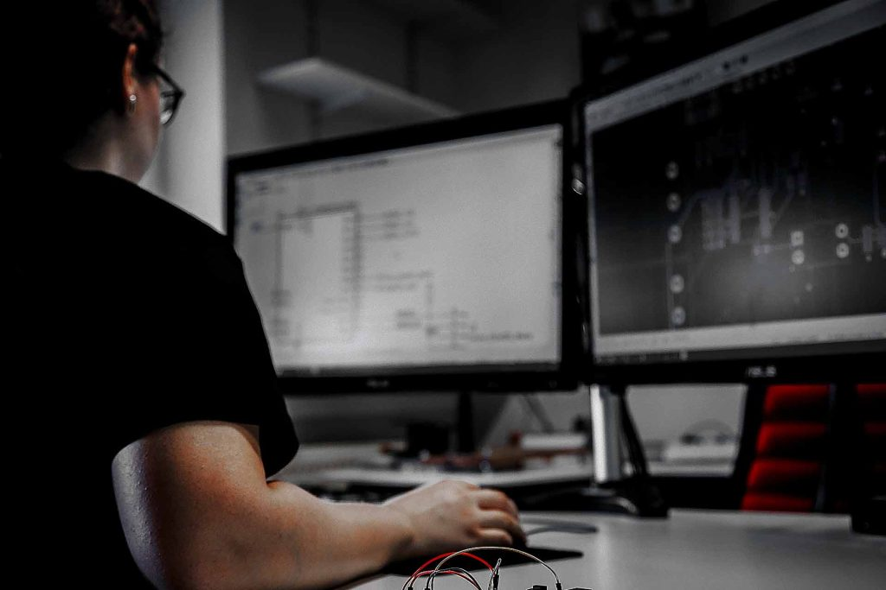

Customized embedded systems
Embedded C++. High-frequency measurement and diagnostics.
By providing people with machine-generated information, we enable them to make well-informed decisions. We build the measurement electronics, the data storage and the analysis for it.
Condition monitoring for Industry 4.0
Upgrade your machines for predictive maintenance.
We cater to experts in the design and manufacturing of high-end tooling machines, offering customized solutions to upgrade their machines for predictive and preventive maintenance strategies.
Our systems are especially suitable for expensive equipment, where the investment in monitoring systems can quickly amortize.

From sensor to decision
Four steps, one system.
Data acquisition
Physical events.
We build analog front-ends for physical sensors such as
- Current, voltage and power
- Infrared cameras
- Ultrasonic vibration measurement
- Flow measurement
Connecting sensors to your grid
Plug and play.
We work with all bus systems commonly used in the industry, such as
- Ethernet and PoE
- CAN and LIN
- 1-Wire
- RS232 and RS485
- LoRaWAN and USB
Data storage and data conditioning
AI-powered analysis. Fully integrated.
Our in-house developed archiving systems work hand in hand with our electronics to provide you with a comprehensive monitoring solution. To ensure seamless integration with systems like SAP or manufacturing execution systems, we use openly documented interfaces.
Analysis methods we use:
- FFT
- Heat
- DQ transformation and IPSA
- Isolation forest
- Machine learning and AI
User interfaces
Knowledge becomes power.
At the end of the day, no one needs data. People need knowledge to make the best possible decision. Our user interfaces bring the right information to the right place.
Some examples of our distribution systems:
- SMS for the maintenance technician
- Dashboard for the plant manager
- Analysis software for the machine operator
- Green light for the stack light



WITNESS
WITNESS learns how your machines normally run and tells you what deviates, inside your plant. Modular, on-prem condition monitoring built on standard PoE.